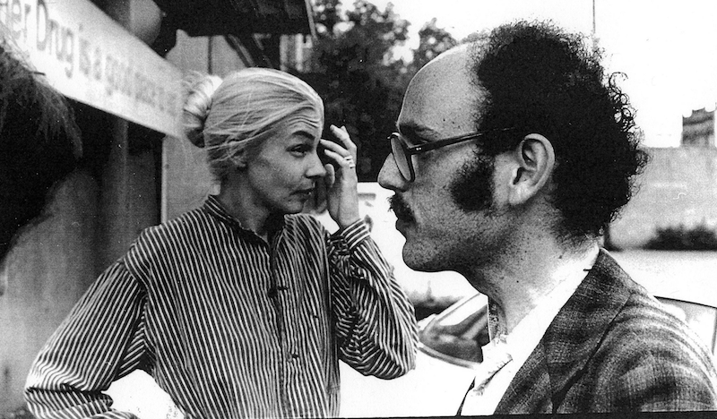

About
On the radio Cedar-Riverside station KFAI devoted its weekly Global Beat program to the Snoose Boulevard Project on 18 Sep. Audio Player
Use Up/Down Arrow keys to increase or decrease volume.
A century ago
The American mid-West was a magnet for immigration from Scandinavia, and Minneapolis was where they came to buy snus (snuff) and Nordic newspapers, and be entertained in their own languages. Dania Hall in the Cedar-Riverside district offered music hall and variety in Norwegian, Swedish and Danish.
The main street in a Scandinavian neighborhood was known in those days as “Snoose Boulevard”. In Chicago that was Chicago Avenue; in St Paul, Payne Avenue; and in Minneapolis, Cedar Avenue.
In the 1970s

Cedar Cultural Center in the 1970s
The immigrants prospered and, as in so many immigrant neighborhoods, dispersed to wealthier suburbs. Rents in Cedar-Riverside remained low and the 1960s saw it colonised by students, artists, and hippies.
In the 1970s folklorist and musician Maury Bernstein organized in Cedar-Riverside the Snoose Boulevard Festival, a weekend-long revival and celebration of the songs popular along Cedar Avenue between the 1880s and early 1950s. There was dancing, and the street rang to the lively and melancholy songs of the Scandinavian pioneers.
The 1973 festival was carried on 102 National Public Radio stations throughout the U.S., and was broadcast on Swedish radio and television. Three LP collections were released:
- Memories of Snoose Boulevard
- Return to Snoose Boulevard
- Scandinavian in the New Land
Today
Little remains of this today in Cedar-Riverside. The Cedar Cultural Center endures as a music venue but you are more likely to hear hip hop than “Hälsa Dem Därhemma”. The Acadia Café and other bars too remain live music venues. The current generation of immigrants is Somali. Snoose Boulevard is a fading memory, headed for university and folklore archives.
The Snoose Boulevard Project aims to celebrate that memory, and preserve the immigrants’ music for the enjoyment of future generations.
Aims
The project has the following aims:
- Preserve the digitized masters of the three festival albums in an institutional archive under a suitable license.
- Reissue the albums as CDs and LPs and make them available over a streaming music service such as iTunes or Spotify.
- Publish an illustrated history of the festival and the Scandinavian-American musicians and culture it celebrated, completing the work of the 1970s’ Olle i Skratthult Project.
- Launch the book and/or albums with performances in the Cedar Cultural Center in Minneapolis, and possibly venues in New York, London and Scandinavia.
- Connect the music of Snoose Boulevard to the present-day Somali immigrants, many of whom have reached Minneapolis through the generosity of Sweden as a refuge for those fleeing war and drought.
Resources
Anne-Charlotte Harvey and Maury Bernstein
Anne-Charlotte Harvey has access to the master recordings for the festival albums.
The University of Augsburg published on YouTube extracts from the festival album Return to Snoose Boulevard.
The American Swedish Institute in Minneapolis has eight boxes of material from Maury Bernstein’s estate:
- 18 audio tape reels of 1973, 1975, 1977 Snoose Boulevard Festival
- 35 audio tape reels of Olle I Skratthult productions
- Personal papers of Maury Bernstein: correspondence, financial, publicity photos, photographs
- Photographs of Anne-Charlotte Harvey, musicians, performers
- 10 cassette tapes and 1 reel-to-reel tape
- 14 audio reels of Memories of Snoose Boulevard, and Anne-Charlotte Harvey album cover
- 5 video cassetts of Snoose Boulevard, 37 audio tapes of interviews, Scandinavian humor, etc.
- 20 copies of Swedish Emigrant Ballads by Robert Wright, University of Nebraska, 1965; 12 stand-up publicity posters for the Snoose Boulevard Festival
Linda Gammell, a photographer, has color slides of the festival in her archive.
Olle i Skratthult
Olle i Skratthult in 1916 with accordionist Gustav NybergOlle i Skratthult (roughly translated, “Olle from Laughtersville”), whose real name was Hjalmar Peterson, was America’s leading exponent of bondkomik, a uniquely Swedish variety of rustic comedy.
Born in Munkfors, Värmland, Feb. 7, 1886, he emigrated to America in 1906 and soon established himself as an entertainer. From about 1917 to 1933 Olle traveled the length and breadth of the U.S. with his Swedish-language “vaudeville” company of up to thirty singers, musicians, actors and dancers. Swedish-American vaudeville was not like its English-language counterpart. It was colorful, nostalgic and wholesome fun for all ages. It consisted of Swedish folk plays with olios, folk dancing, singing, recitations—and public old-time dancing at the end of the program.
Many of the most popular Scandinavian songs in America were introduced by the Olle i Skratthult Company: “Nikolina”, “Barndomshemmet”, and “Hälsa Dem Därhemma” are all on the first festival album.
Olle’s gentle comedy and captivating stage appearance were still fondly remembered by thousands of Scandinavian-Americans in the 1970s. He died in Minneapolis in 1960.
Music
“Holy Yumpin Yiminy” (1918) was a product of New York’s Tin Pan Alley. It has fun with how Swedes often pronounced J in English words as they would in Swedish; that is, as a Y.
Holy Yumpin Yiminy
A simple Swedish girl was Hilda, when she landed here, but in one short year she learned our ways and everything. She got a beau named Yonnie Yonson since she left the boat. She sent his picture to the folks back home: on the back of it she wrote:
Holy Yumpin’ Yiminy how my Yonny can love! When he kisses me, oh what yoy, makes me feel so oh! by Yiminy! He bane my sweet Papa, I bane his Turtle dove. He no bane much on reading books and he bane worse when it comes to looks, but holy Yumpin’ Yiminy, how my Yonnie can love!
Now if you look at Yonnie’s picture you might think he’s slow, but he seems to know ’bout cows and dogs and everything. And when you talk about my Yonnie you speak of the best: I found out lots of things about that boy, he’s so different from the rest.
Holy Yumpin’ Yiminy how my Yonny can love! When he kisses me, oh what yoy, makes me feel so oh! by Yiminy! He bane my sweet Papa, I bane his Turtle dove. He’s yust as clumsy as can be but when he sits me on his knee, Holy Yumpin’ Yiminy, how my Yonnie can love!
The mockery cannot conceal its affection, and on the first festival album, Memories of Snoose Boulevard, Harvey’s interpretation is boisterous and irrepressible.
Vocals Anne-Charlotte Harvey
Piano ?
Bass E. Craig Ruble